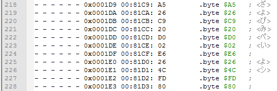
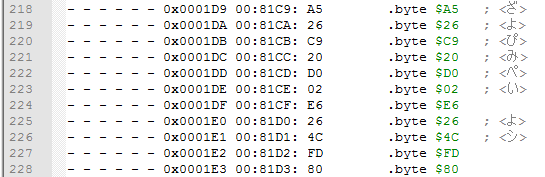

Config and input files
Back to the main page
Table of contents
Config and input files
If you want to see a successful example of a disassembly which I made for Captain Tsubasa 2 ROM, download this archive and try for yourself. Make sure to unpack it into "C:\BZK 6502" folder if it's the first time you're using it. Note that this example might use an outdated disssembler version.
Once you've downloaded the latest release, open config.lua file with a text editor. You're gonna need to edit this config depending on your needs and on your game.
Note that HEX values must be written with "0x" at the beginning. For example, to specify $8000, you actually write 0x8000.
Input
Place ROM_file, CDL_file and table files (from ASM_config_table option) into "input" folder, then specify their names and paths in a config file.
INPUT_folder and OUTPUT_folder
INPUT_folder is where your .nes, .cdl and .tbl files must be placed before launching the disassembler.
OUTPUT_folder is where your output files will appear once my disassembler does his stuff. Note that the disassembler doesn't clear this folder before creating new files, and existing files with the same name will be overwritten.
Unfortunately, Lua doesn't work with relative paths out of the box, so I need to specify paths manually. Default folder (where LAUNCHME.bat file is located) is C:\BZK 6502, this is where you need to unpack the disassembler if you're not planning to edit these paths.
In case you've decided to change paths for INPUT_folder and OUTPUT_folder folders, note that all "\" symbols must be replaced with "/" symbols, and the final symbol of the path should also be "/".
Another important thing: both folders must actually exist, and paths should not contain any weird symbols, only Latin letters, numbers, spaces, underlines and some others are allowed. Otherwise the disassembler will throw an error.
ROM_file
This is a name of your game file. Default name is "game.nes", and it must be placed in \input\game.nes by default.
Disassembler will be taking header, PRG (code and data) and CHR (graphics) bytes from this file.
CDL_file
This is a name of your CDL file which was produced by your emulator. Default name is "game.cdl", and it must be placed in \input\game.cdl by default.
Disassembler will be taking flags from this file and paste code/data respectively in assembly files.
Output
HEADER_file
This option has 3 arguments. By default you don't need to change those.
Name of the header file. Default name is "header.bin", and it will appear in \output\header.bin.
Start address from the ROM_file. Header is located at the very beginning of the file, so the address is 0x000000 by default.
Size of a header. NES header is a 16 bytes string, so size should be 0x10. But if your ROM_file doesn't have a header, or if you simply don't want a header file as an output, set size to 0x0.
CHR_file
This option has 3 arguments.
Name of the CHR file. Default name is "CHR_ROM.chr", and it will appear in \output\CHR_ROM.chr.
Start address from the ROM_file. CHR is located after PRG. The disassembler doesn't calculate address and size of the CHR, you need to do this manually.
Size of a CHR file. If your ROM_file doesn't have a CHR, or if you simply don't want a CHR file as an output, set size to 0x0.
RAM_file
This is a name of the file which will contain labels for RAM addresses ($0000-$07FF).
If the disassembler will detect any usage of SRAM addresses ($6000-$7FFF), it will add labels to those as well. However, output ASM files won't have these labels. RAM_file will print a manual about how to deal with this.
RAM_usage_output
Additional information for RAM_file. This option can show you how many times the disassembler has detected usage of a particular address, and addressing modes of the instructions that were using this address. It might give you some useful information if you figure out how to use it. Set to false if you don't want to print them in a RAM_file.
For example if RAM_file says that this address was used only once, it is a circumstantial evidence of this address actually being useless in the game. Note that the disassembler only counts addresses from instructions operands if these instructions were logged as code. Which means that there can be more unlogged addresses usages out there.
The most useful options are 9 ($indirect), 10 ($indirect,X) and 11 ($indirect),Y. ($indirect) is a JMP ($xxxx) instruction. ($indirect,X) is something like LDA ($xx,X) instruction. ($indirect),Y is something like LDA ($xx),Y instruction.
Indirect addressing mode uses 2 neighboring addresses, for example LDA ($00),Y uses both $00 and $01. But the disassembler doesn't count the usage of the second $01 address in this case, it only takes the address $00 into account.
DEBUG_file
This is a name of the file which contains the same information as RAM_file does (besides labels), but it will contain that info for the whole $0000-$FFFF CPU range, and will print all available counters despite RAM_usage_output options. This file can also be somewhat useful in some cases.
Default name is "debug.txt", and it will appear in \output\debug.txt. If you don't want this file as an output, set the 2nd argument to false.
FORCE_byte_comments
If no text was specified to this byte inside a table file, or if a table file was not configured for this bank, it can still print ";" near this byte. Can be convenient later for manually adding comments to bytes from some tables. If set to true:

If set to false:

ASM_config_table
This table contains 5 arguments for each ASM file. The disassembler doesn't calculate banks depending on the mapper, you need to specify arguments yourself. You can have as many banks as you want, and you don't need to disassembly the whole PRG ROM if you don't want to.
Name of the assembly file. If the name is "bank_00.asm", file will appear in \output\bank_00.asm. If you specify the same name to some other ASM files, disassembly will be appended to this file, not overwritten. However I don't recommend you doing that for banks with the same NES Memory addresses, because of my autolabeling Notepad++ scripts.
Start ROM File address from your ROM_file. If your ROM has a header, then the very first bank is located starting from 0x000010.
Base NES Memory address for current bank. Usually you need to map code/data for a bank starting from 0x8000, 0xA000, 0xC000 or 0xE000. In case you're not sure what base address you need, set it to 0x8000 for now, and then read about Data Mapping flag from the next article.
Size of the bank. Usually size should be 0x2000, 0x4000 or 0x8000. If base address is 0x8000, and size is 0x2000, code/data will be mapped at $8000-$9FFF (the last address of this range must not exceed $FFFF).
Name of the table file, it will be used for bytes which were not logged as code. If you don't want to use a table file for the current bank, set to false.
A table file looks like a regular table file which you were probably using before at some point. For my disassembler it should contain all 256 bytes, starting from "00=" and ending with "FF=". The disassembler doesn't actually look at bytes, it just counts lines of the file and reads text starting from 4th symbol, which is right after "=".
You can specify any UTF-8 text after "=" to those bytes (like Japanese or whatever), and several symbols if you want, not just single symbols as you're used to (like letters and numbers). In case there is no text after "=", this byte will be ignored and nothing will be printed next to this byte in ASM file.